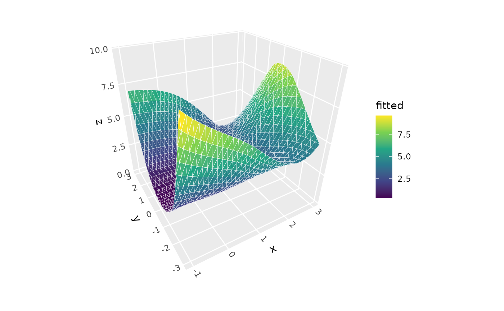
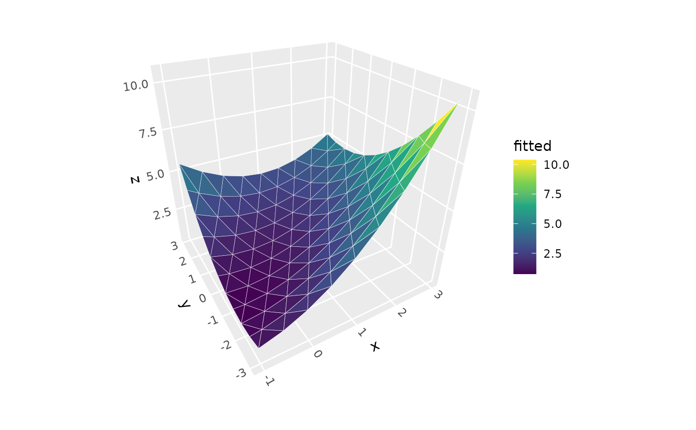
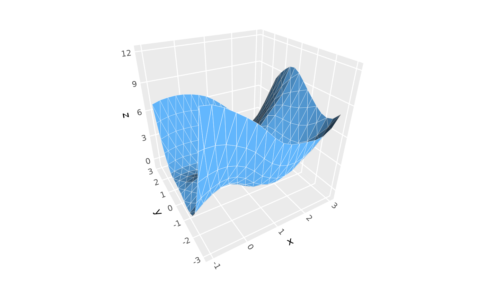
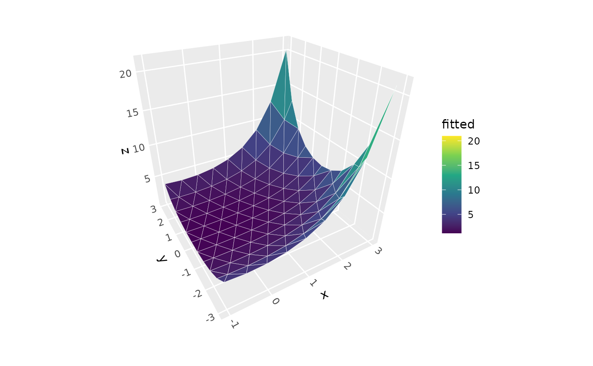
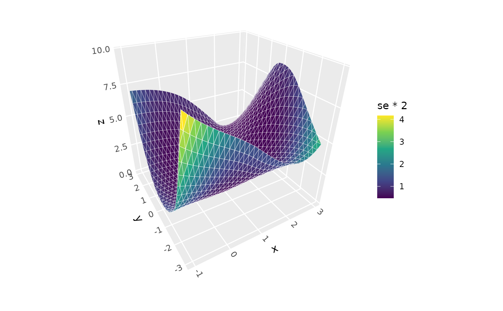
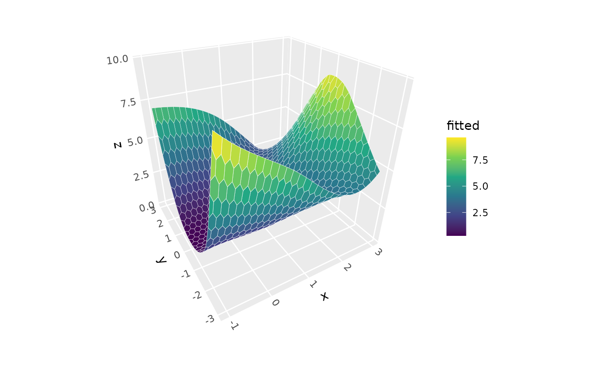
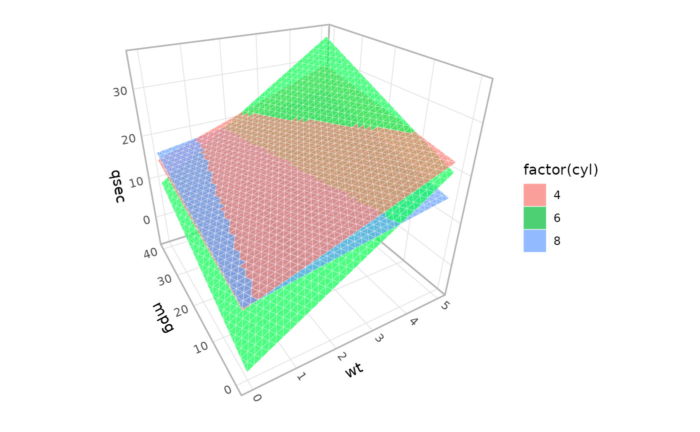

A 3D version of ggplot2::geom_smooth().
Creates surfaces by fitting smoothing models to scattered (x,y,z) data points.
The fitted statistical model is evaluated on a regular grid and rendered as a
3D surface with optional standard error surfaces.
Usage
geom_smooth_3d(
mapping = NULL,
data = NULL,
stat = StatSmooth3D,
position = "identity",
...,
method = "loess",
formula = NULL,
method.args = list(),
xlim = NULL,
ylim = NULL,
n = NULL,
grid = NULL,
direction = NULL,
domain = c("bbox", "chull"),
se = FALSE,
level = 0.95,
se.fill = NULL,
se.colour = NULL,
se.color = NULL,
se.alpha = 0.5,
se.linewidth = NULL,
light = NULL,
cull_backfaces = FALSE,
sort_method = NULL,
force_convex = TRUE,
scale_depth = TRUE,
na.rm = FALSE,
show.legend = NA,
inherit.aes = TRUE
)
stat_smooth_3d(
mapping = NULL,
data = NULL,
geom = GeomSmooth3D,
position = "identity",
...,
method = "loess",
formula = NULL,
method.args = list(),
xlim = NULL,
ylim = NULL,
n = NULL,
grid = NULL,
direction = NULL,
domain = c("bbox", "chull"),
se = FALSE,
level = 0.95,
se.fill = NULL,
se.colour = NULL,
se.color = NULL,
se.alpha = 0.5,
se.linewidth = NULL,
light = NULL,
cull_backfaces = FALSE,
sort_method = NULL,
force_convex = TRUE,
scale_depth = TRUE,
na.rm = FALSE,
show.legend = NA,
inherit.aes = TRUE
)Arguments
- mapping
Set of aesthetic mappings created by
aes(). This stat requiresx,y, andzaesthetics from the input data. By default, fill is mapped toafter_stat(fitted).- data
The data to be displayed in this layer. Must contain x, y, z columns.
- stat
The statistical transformation to use on the data. Defaults to
StatSmooth3D.- position
Position adjustment, defaults to "identity". To collapse the result onto one 2D surface, use
position_on_face().- ...
Other arguments passed on to the the layer function (typically GeomPolygon3D), such as aesthetics like
colour,fill,linewidth, etc.- method
Smoothing method to use. Currently supported:
"loess"(default): Local polynomial regression"lm": Linear model"glm": Generalized linear model"gam": Generalized additive model (requiresmgcvpackage)
- formula
Model formula. If
NULL(default), uses method-appropriate defaults:z ~ x + yfor lm and glm,z ~ s(x) + s(y)for gam, auto for loess.- method.args
List of additional arguments passed to the fitting function. For loess, this might include
spanordegree. For lm, this might includeweights. For glm, this might includefamily(defaults togaussian()). For gam, this might include smoothing parameters or basis specifications.- xlim, ylim
Numeric vectors of length 2 giving the range for prediction grid. If
NULL(default), uses the exact data range with no extrapolation.- grid, n, direction
Parameters determining the geometry, resolution, and orientation of the surface grid. See grid_generation for details.
- domain
Character indicating the x-y domain over which to visualize the surface. The default,
"bbox", shows predictions over the full rectangular bounding box of the predictors.The alternative,"chull", shows predictions only within the convex hull of the input data, which prevents extrapolation into unoccupied corners of predictor space.- se
Logical indicating whether to display confidence interval bands around the smooth; if
TRUE, these are rendered as additional surfaces; they inherit aesthetics from the primary smooth layer unless otherwise specified. Defaults toFALSE.- level
Level of confidence interval to use (0.95 by default).
- se.fill
Fill colour for confidence interval bands. If
NULL, inherits from the main surfacefillaesthetic.- se.colour, se.color
Colour for confidence interval band borders. If
NULL, inherits from the main surfacecolouraesthetic.- se.alpha
Alpha transparency for confidence interval bands. Defaults to 0.5.
- se.linewidth
Line width for confidence interval band borders. If
NULL, inherits from the main surfacelinewidthaesthetic.- light
A lighting specification object created by
light(), or NULL to disable shading.- cull_backfaces, sort_method, force_convex, scale_depth
Advanced polygon rendering parameters. See polygon_rendering for details.
- na.rm
If
FALSE, missing values are removed.- show.legend
Logical indicating whether this layer should be included in legends.
- inherit.aes
If
FALSE, overrides the default aesthetics.- geom
The geometric object used to display the data. Defaults to
GeomPolygon3D.
Aesthetics
stat_smooth_3d() requires the following aesthetics from input data:
x: X coordinate
y: Y coordinate
z: Z coordinate (response variable to be smoothed)
Computed variables specific to StatSmooth3D
level: Type of surface ("fitted", "upper CI", or "lower CI" for confidence bands)fitted: Smoothed predictions (same aszwhenlevel == "fitted")se: Standard errors of the fitted values (available whense = TRUE)
Computed variables
The following computed variables are available via after_stat():
x,y,z: Grid coordinates and function valuesnormal_x,normal_y,normal_z: Surface normal componentsslope: Gradient magnitude from surface calculationsaspect: Direction of steepest slope from surface calculationsdzdx,dzdy: Partial derivatives from surface calculation
See also
stat_surface_3d() for surfaces from existing grid data,
stat_function_3d() for mathematical function surfaces,
make_tile_grid() for details about grid geometry options,
light() for lighting specifications, coord_3d() for 3D coordinate systems.
Examples
# Generate scattered 3D data
set.seed(123)
d <- data.frame(
x = runif(100, -1, 3),
y = runif(100, -3, 3)
)
d$z <- abs(1 + d$x^2 - d$y^2 + rnorm(100, 0, 1))
# Base plot
p <- ggplot(d, aes(x, y, z)) +
coord_3d() +
scale_fill_viridis_c()
# Basic smooth surface with default loess model
p + geom_smooth_3d()
#> Warning: Ignoring unknown parameters: `force_convex` and `sort_method`

# Linear model surface with 90% confidence intervals
p + geom_smooth_3d(aes(fill = after_stat(level)),
method = "lm", color = "black", se = TRUE,
level = 0.99, se.alpha = .7, n = 10) +
scale_fill_manual(values = c("red", "darkorchid4", "steelblue"))
#> Warning: Ignoring unknown parameters: `force_convex` and `sort_method`
#> Scale for fill is already present.
#> Adding another scale for fill, which will replace the existing scale.
# Linear model surface with custom model formula
p + geom_smooth_3d(method = "lm", n = 10,
formula = z ~ poly(x, 2) + poly(y, 2) + x:y)
#> Warning: Ignoring unknown parameters: `force_convex` and `sort_method`

# Loess with custom span parameter, and lighting aesthetics
p + geom_smooth_3d(
method = "loess", method.args = list(span = 0.3),
fill = "steelblue", color = "white", n = 20,
light = light(direction = c(0, -1, 0)))
#> Warning: Ignoring unknown parameters: `force_convex` and `sort_method`

# GLM with gamma family and log link
p + geom_smooth_3d(
method = "glm", n = 10,
method.args = list(family = Gamma(link = "log")),
formula = z ~ poly(x, 2) + poly(y, 2))
#> Warning: Ignoring unknown parameters: `force_convex` and `sort_method`

# Visualize uncertainty with computed "standard error" variable
p + geom_smooth_3d(aes(fill = after_stat(se * 2))) +
scale_fill_viridis_c()
#> Warning: Ignoring unknown parameters: `force_convex` and `sort_method`
#> Scale for fill is already present.
#> Adding another scale for fill, which will replace the existing scale.

# Extend surface beyond training data range (explicit extrapolation)
p + geom_smooth_3d(method = "lm", xlim = c(-5, 5), ylim = c(-5, 5))
#> Warning: Ignoring unknown parameters: `force_convex` and `sort_method`
# Clip surface to predictor convex hull
# to prevent extrapolation into corner areas
p + geom_smooth_3d(method = "lm", domain = "chull")
#> Warning: Ignoring unknown parameters: `force_convex` and `sort_method`
# Specify alternative grid geometry
p + geom_smooth_3d(grid = "hex", n = 30, direction = "y")
#> Warning: Ignoring unknown parameters: `force_convex` and `sort_method`

# Separate fits for data subgroups
ggplot(mtcars, aes(wt, mpg, qsec, fill = factor(cyl))) +
geom_smooth_3d(method = "lm", alpha = .7,
xlim = c(0, 5), ylim = c(0, 40)) + # specify shared domain
coord_3d() + theme_light()
#> Warning: Ignoring unknown parameters: `force_convex` and `sort_method`
